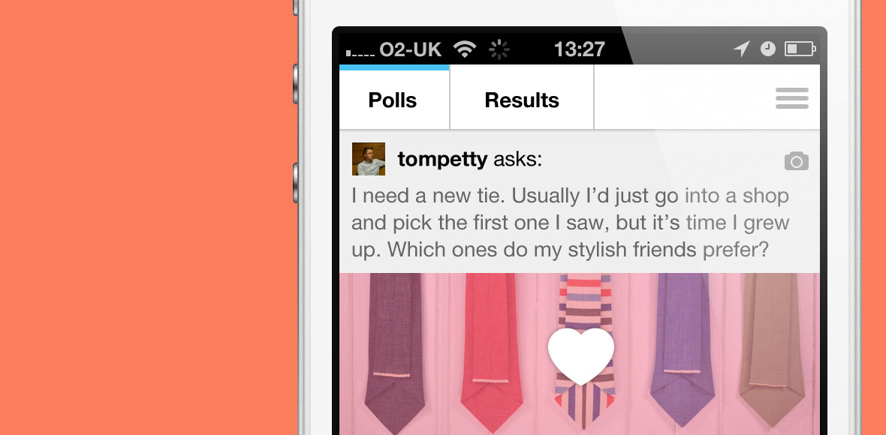
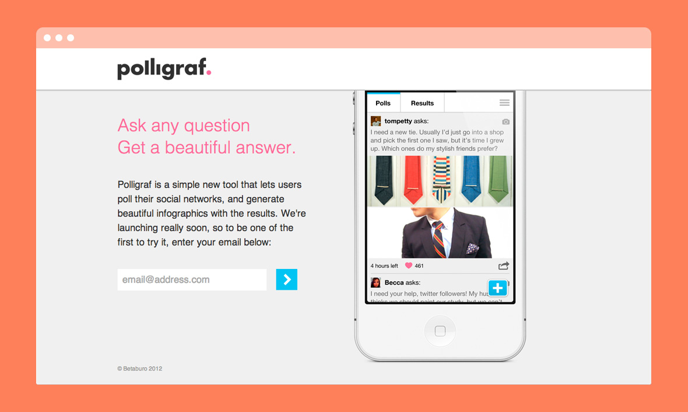

	
	<section class="handshake dark cf">
		
		<div class="contain">
			
			<h2 class="project-title">Polligraf</h2>
			
			<h2>Polligraf is a simple tool that 
			lets users poll their social networks, 
			and generate beautiful infographics with 
			the results. I designed the iPhone app, 
			launch site and event materials.</h2>
		
		</div>
		
	</section>
	
	<section class="contain case-study">
		
		
		
		
		
		
		
		
		
		
		
		
		
	</section>
